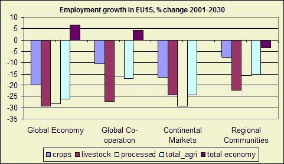
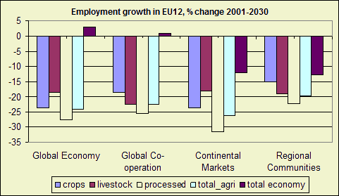

Highlights
Employment growth in the total economy is driven by population growth which
is based on demographic trends. In general it is low in the EU25. In the EU15
it is slightly positive in the globalization scenarios and slightly negative
in the regionalization scenarios. In the EU12 total employment growth is lower
than in the EU15. In the regionalization scenarios employment growth declines
with about 12% in the 2000-2030 period.

Figure 1 - Employment growth in EU15, % change 2001-2030
Past developments
Slowing trends in population and employment growth.
Future developments
Employment growth in the total economy is driven by population growth which
is based on demographic trends. In general it is low in the EU25. In the EU15
it is slightly positive in the globalization scenarios and slightly negative
in the regionalization scenarios. In the EU12 total employment growth is lower
than in the EU15. In the regionalization scenarios employment growth declines
with about 12% in the 2000-2030 period.

Figure 2 - Employment growth in EU12, % change 2001-2030
Policy effects
CAP and Policies have no impact on total employment growth.
Most important drivers
Demographic trends (birthrates, dead rates and migration). These trends are
assumptions in the modeling excursive.